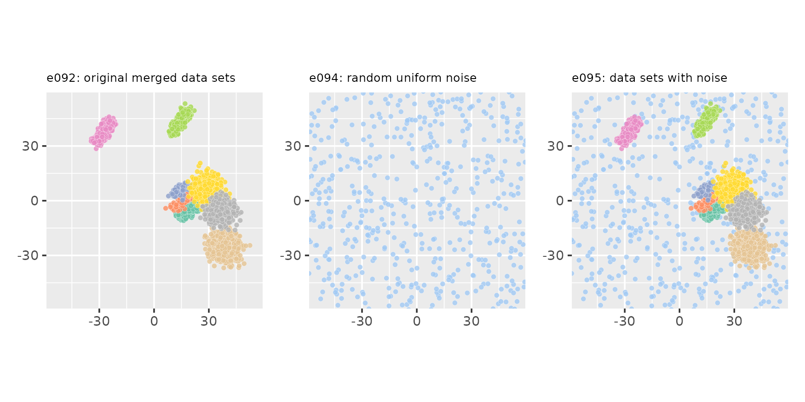

This section contains several examples on how to merge cluster data,
either generated with clugenr or from other sources.
Although it is possible to merge data in any dimension, these examples
will focus on merging 2D data. Therefore, we’ll use the same
plot_examples_2d() function used for the
vignette("examples2d"), requiring the following setup
code:
# Load the clugenr library
library(clugenr)
# Load functions for plotting examples
source("plot_examples_2d.R", local = knitr::knit_global())
# Keep examples reproducible in newer R versions
RNGversion("3.6.0")Merging two data sets generated with clugen()
seed1 <- 4444
seed2 <- 5555
e090 <- clugen(2, 5, 1000, c(1, 1), pi / 12, c(20, 20), 14, 1.2, 1.5, seed = seed1,
proj_dist_fn = "unif", point_dist_fn = "n")
e091 <- clugen(2, 3, 1500, c(1, 0), 0.05, c(20, 20), 0, 0, 4, seed = seed2,
point_dist_fn = "n", cluster_offset = c(20, 0))
e092 <- clumerge(e090, e091)
plot_examples_2d(list(e = e090, t = "e090: data set 1"),
list(e = e091, t = "e091: data set 2"),
list(e = e092, t = "e092: merged data sets"))In the previous example, clusters from individual data sets remain as
separate clusters in the merged data set. It’s also possible to maintain
the original cluster labels by setting the clusters_field
parameter to NA:
e093 <- clumerge(e090, e091, clusters_field = NA)Adding noise to a clugen()-generated data set
set.seed(333)
e094 <- list(points = matrix(120 * runif(2 * 500) - 60, ncol = 2),
clusters = factor(rep(9L, 500))) # Assign noise to cluster 9
e095 <- clumerge(e094, e092, clusters_field = NA) # and keep it 9 when merging
plot_examples_2d(list(e = e092, t = "e092: original merged data sets"),
list(e = e094, t = "e094: random uniform noise"),
list(e = e095, t = "e095: data sets with noise"),
palette = "set2", pmargin = -0.1)
Merging with data not generated with clugen()
Data generated with clugen() can be merged with other
data sets, for example as a way of augmenting them. In this example we
perform stats::prcomp() to the datasets::swiss
dataset to reduce its 6 variables to 2. As there are only 47
observations in this dataset, we’ll use clugen() to
generate very similar clusters and then use clumerge() to
create an augmented dataset:
set.seed(888)
spc <- prcomp(swiss)
e096 <- list(points = spc$x[, 1:2], clusters = factor(rep(4L, dim(spc$x)[1])))
e097 <- clugen(2, 3, 50, c(-0.3, 1), 0., c(0, 0), 0, 0, 3,
proj_dist_fn = "unif", clusizes_fn = c(20, 6, 25),
clucenters_fn = matrix(c(-58, -5, 10, -40, 38, 0),
byrow = TRUE, ncol = 2),
angle_deltas_fn = c(0.02, -0.03, 0.1),
llengths_fn = c(55, 100, 60))
e098 <- clumerge(e096, e097, clusters_field = NA)
plot_examples_2d(list(e = e096, t = "e096: swiss PCA"),
list(e = e097, t = "e097: clugen-generated"),
list(e = e098, t = "e098: merged"),
palette = "seaborn")We can also hierarchize clusters from different sources:
e099 <- append(e096, list(hclusters = factor(rep(1L, dim(spc$x)[1]))))
e100 <- append(e097, list(hclusters = factor(rep(2L, length(e097$clusters)))))
e101 <- clumerge(e099, e100, fields = "points", clusters_field = "hclusters")
plot_examples_2d(list(e = e099, t = "e099: swiss PCA (1 cluster)"),
list(e = e100, t = "e100: clugen-generated (1 cluster)"),
list(e = e101, t = "e101: merged (2 clusters)"),
clusters_field = "hclusters",
palette = "seaborn")Note that augmenting a dataset this way is probably not a statistically sound approach for most problems. In any case, if we perform clustering on the merged dataset and assume there are 3 clusters, results are interesting:
# For display purposes, assign all points in merged data to a single cluster
e102 <- list(points = e101$points, hclusters = factor(rep(1L, length(e101$hclusters))))
# Perform hierachical clustering with Manhattan distance, complete linkage and
# assuming 3 clusters
clusts <- cutree(hclust(dist(e101$points, method = "manhattan")), 3)
# Create data set with merged points and new cluster labels
e103 <- list(points = e101$points, hclusters = factor(clusts))